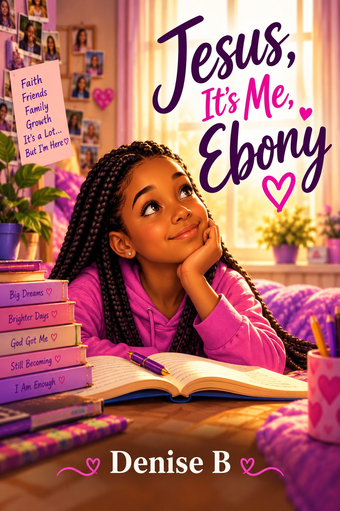

For classrooms, libraries & youth spaces ♡
Bring Ebony Into the Classroom
A relatable story. Meaningful conversations.
A voice young readers can recognize.
Jesus, It’s Me, Ebony gives young readers something every child deserves to encounter in literature: permission to wonder, question, feel, and find their own voice.
Through Ebony’s experiences, students encounter age-appropriate opportunities to discuss friendship, family, identity, faith, race, colorism, growing up, belonging, self-esteem, and navigating change.
Ebony doesn’t have all the answers. She gives young readers a character they can think with, laugh with, question with, and—perhaps most importantly—recognize themselves in.

A story that opens the door
to real conversation. ♡
to real conversation. ♡
SPECIAL SCHOOL
& BULK PRICINGAVAILABLE
& BULK PRICINGAVAILABLE
A Natural Fit For:
Classroom & independent readingSchool & community book clubsGirls’ mentoring programsLiteracy initiativesLibrary reading programsFaith-based youth programsSocial-emotional learning conversationsYouth & community organizations
MORE THAN A BOOK ♡
Resources for meaningful conversation
Educator resources are being developed to support classroom and group reading, including discussion questions, writing prompts, reflection activities, and guided conversations.
Discussion QuestionsWriting PromptsReflection ActivitiesGuided Conversations